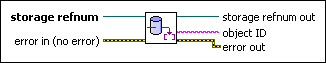
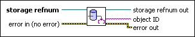

Refnum to ID VI
Owning Palette: Advanced Storage VIs
Requires: Base Development System (Windows)
Returns the ID for a data object.

 Add to the block diagram Add to the block diagram |
 Find on the palette Find on the palette |
Owning Palette: Advanced Storage VIs
Requires: Base Development System (Windows)
Returns the ID for a data object.

| Add to the block diagram |
Find on the palette |
 |
storage refnum specifies the reference number for the data object you want to access. |
 |
error in describes error conditions that occur before this node runs. This input provides standard error in functionality. |
 |
storage refnum out returns a reference number for the data object this VI accesses. |
 |
object ID returns the object ID, which is a unique string that identifies the object in the file. The object ID is persistent, so you can reuse it after closing a file and opening the file again. |
 |
error out contains error information. This output provides standard error out functionality. |